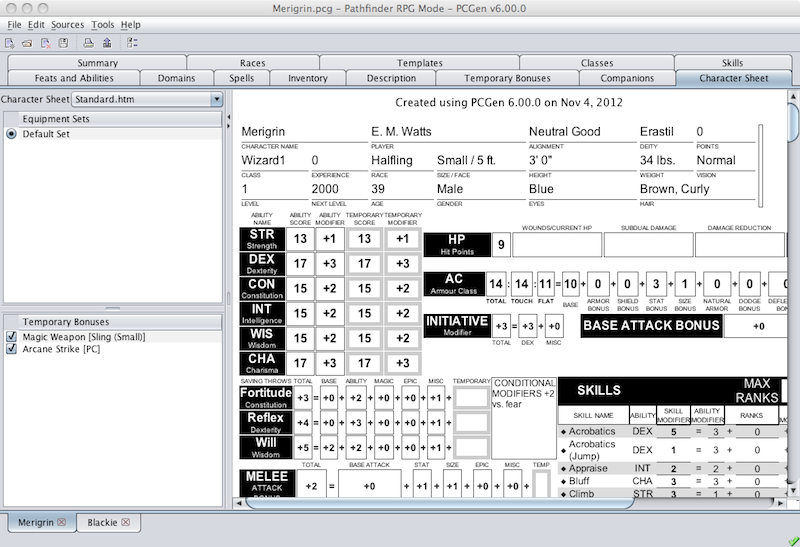
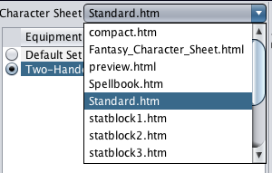

The Character Sheet tab is used to review and preview characters created by PCGen.
The Character Sheet tab uses html to render its display, this means that the sheets can be edited with a text editor while the program is running and they can be created and altered by anyone with a little knowledge of html and the OS tokens. The html output sheets used for output can be used in the Character Sheet tab.
Changes made to the character in PCGen are updated automatically on the Character Sheet as they are made. As an example, if the Rage bonuses (3.5e and Pathfinder gameModes) are applied on the Temporary Bonuses tab, the character displayed on the Character Sheet tab would bonuses will be updated to include those bonuses the next time the user returns to the Character Sheet tab.

The Character Sheet Tab has an additional pane on the left which can be accessed by clicking the arrow along the vertical border of the window. This pane displays the Character Sheet selection menu, the Equipsets and a list of temporary bonuses which have been applied to the PC. The Character Sheet selection menu enables the user to select a sheet from a list of sheets available for the currently active gameMode. The radio button beside each Equipset indicates which Equipset is currently being applied to the PC and displayed in the Character Sheet Tab. You can switch to another Equipset by simply clicking on the corresponding radio button. Each temporary bonus has a check box on it's left which indicate if it is active or not. Temporary bonuses can be switched off and on with the check box which will update the output of the Character Sheet tab.

All the sheets used by the Character Sheet tab can be found in the pcgen/preview directory. Each gameMode has a specific directory of sheets which is set in the gameModes miscinfo.lst file with the PREVIEWDIR tag. Each gameMode also has a default sheet set by the PREVIEWSHEET tag in the gameModes miscinfo.lst file.
Character Sheets can contain images, the paths to the images must use the pcgen directory as its root.
Character Sheets can utilize Javascript. Check out the preview.html sheet for examples of what can be accomplished by javascript savvy coders.